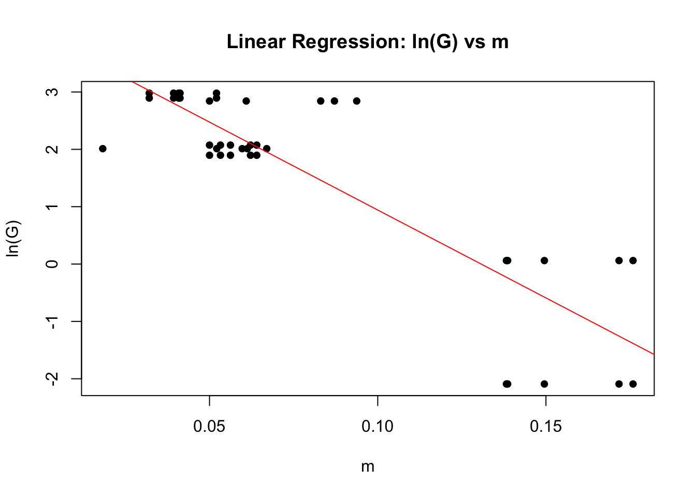

This code explores the Nelson 1984 equation predictions for equilibrium litter moisture content relative to data collect in the field from the 2022 IRES Microclimate project. Data from both microphase 1 and 2 experiments are used.
File written: 2026-04-04, Heather Throop
Last updated: 2026-04-19 HT, added code to calculate A and B values for each species and litter condition combination and to plot the resulting Gibbs equation curves on scatter plots.
Preparation Steps
── Attaching core tidyverse packages ──────────────────────── tidyverse 2.0.0 ──
✔ dplyr 1.1.4 ✔ readr 2.1.6
✔ forcats 1.0.1 ✔ stringr 1.6.0
✔ ggplot2 4.0.1 ✔ tibble 3.3.0
✔ lubridate 1.9.4 ✔ tidyr 1.3.2
✔ purrr 1.2.0
── Conflicts ────────────────────────────────────────── tidyverse_conflicts() ──
✖ dplyr::filter() masks stats::filter()
✖ dplyr::lag() masks stats::lag()
ℹ Use the conflicted package (<http://conflicted.r-lib.org/>) to force all conflicts to become errors
# Use the stored config file to define the path for the DERT Data & Metadata folder (in HT's ASU Dropbox) DERT_Archives <- config::get()# Base project pathsdata_dir <-file.path(DERT_Archives,"NSF_IRES", "2022_Littermicroclimate","HT_compiled", "data")stats_dir <-file.path(DERT_Archives,"NSF_IRES", "2022_Littermicroclimate","HT_compiled", "output", "stats")fig_dir <-file.path(DERT_Archives,"NSF_IRES", "2022_Littermicroclimate","HT_compiled", "output", "figures")
# weather_df files are meterological data collected at the met station, litter_df files are litter moisture data collected from litter moisture manipulation experiments micro1_weather_df <-read_csv(file.path(data_dir,"microphase1_L2_weather_data.csv"))
Rows: 79 Columns: 16
── Column specification ────────────────────────────────────────────────────────
Delimiter: ","
chr (2): StationName, Date
dbl (12): StationID, Hour, Minute, AirTemperature, SoilTemp, Rain, Fog, Win...
dttm (1): Datetime
time (1): Time
ℹ Use `spec()` to retrieve the full column specification for this data.
ℹ Specify the column types or set `show_col_types = FALSE` to quiet this message.
Rows: 108 Columns: 10
── Column specification ────────────────────────────────────────────────────────
Delimiter: ","
chr (2): Date, Station
dbl (6): AirTemp, SoilTemp, Fog, WindSpeed, Humidity, elapsed_time
dttm (1): Datetime
time (1): Hour
ℹ Use `spec()` to retrieve the full column specification for this data.
ℹ Specify the column types or set `show_col_types = FALSE` to quiet this message.
Rows: 711 Columns: 22
── Column specification ────────────────────────────────────────────────────────
Delimiter: ","
chr (6): Species, Littercond, TYPE, Date, Cond_spec, Group
dbl (14): Plot, Rainfall, Bag_mass1, Bag_mass2, Interval, Sample_mass, Sand...
dttm (1): Datetime
time (1): Time
ℹ Use `spec()` to retrieve the full column specification for this data.
ℹ Specify the column types or set `show_col_types = FALSE` to quiet this message.
Rows: 349 Columns: 22
── Column specification ────────────────────────────────────────────────────────
Delimiter: ","
chr (2): Label, Date
dbl (18): DEPTH, Plot, Rainfall, Interval, Sample_mass, SandMasswBag, Dryin...
dttm (1): Datetime
time (1): Time
ℹ Use `spec()` to retrieve the full column specification for this data.
ℹ Specify the column types or set `show_col_types = FALSE` to quiet this message.
# change litter moisture on a percent basis (LitterMoisturePct) to g/g basis (LitterMoisture) for consistency with Nelson's equationmicro1_litter_df <- micro1_litter_df |>mutate(LitterMoisture = LitterMoisturePct /100)micro2_litter_df <- micro2_litter_df |>mutate(LitterMoisture = LitterMoisturePct /100)# change AirTemp to AirTemperature for consistency with micro1 dataframesmicro2_weather_df <- micro2_weather_df |>rename(AirTemperature = AirTemp)
Nelson 1984 equation 2 for Gibbs free energy of water vapor condensation on litter surfaces: delG = -(RT/M)ln(H/100) R = 1.987 (constant) # universal gas constant in cal/(molK) T = temperature in Kelvin M = 18.01528 (constant) # molar mass of water in g/mol H = relative humidity (%)
# define constants for Nelson equation 2R <-1.987# universal gas constant in cal/(mol*K)M <-18.01528# molar mass of water in g/mol
Microphase1 Experiment
Data are from the first IRES Microclimate field experiment in 2022. Litter packets from two species (Stipagrostis sabulicula and Salvadora persica) and two litter conditions (green and brown) were placed on the soil surface and subjected to one of three watering treatments (0, 5, 10 mm). Gravimetic moisture was measured periodically by destructively harvesting samples. Only the surface litter packets that received no added rainfall are used in this analysis.
calculations
# calculate Gibbs free energy (delG) for water vapor condensation using Equation 2 from Nelson for microphase 1 datamicro1_weather_df <- micro1_weather_df |>mutate(T_K = AirTemperature +273.15, # convert temperature to KelvindelG =-(R * T_K / M) *log(Humidity /100), # calculate delG in cal/molln_delG =log(delG) # calculate the natural log of delG )# Left join micro1_weather_df and micro1_means# Filter to keep only rows where Rainfall equals 0 - these are the litter packets that did not receive added rainfall (but still experienced fog)micro1_nelson_df <- micro1_weather_df |>left_join( micro1_litter_df |>filter(Rainfall ==0),by ="elapsed_time" ) |>filter(!is.na(Species))
# Create micro1 scatter plot - litter moisture vs humidity, faceted by species and litter conditionp_micro1 <-ggplot(micro1_nelson_df, aes(x = Humidity, y = LitterMoisture)) +geom_point() +facet_grid(Species ~ Littercond) +labs(title ="Microphase 1",x ="Relative Humidity (%)",y =expression("Litter Moisture (g g"^{-1}*")"),caption ="" ) +theme_bw() +theme(panel.grid.minor =element_blank(),panel.grid.major =element_blank(),strip.background =element_rect(fill ="lightgrey"),strip.text =element_text(face ="bold") )p_micro1
# These are the isotherm parameters from Nelson 1984, A is the intercept and B is the slope of the # linear regression of ln(G) vs m (litter moisture content in g/g)# Nelson assumes that temperature is constant, which in reality it was not. # Create a dataframe to store A and B values for each combinationab_values <-data.frame()# Get unique combinations of Species and Littercondunique_combos <-unique(micro1_nelson_df[, c("Species", "Littercond")])# For each unique Species and Littercond combinationfor(i in1:nrow(unique_combos)) { current_species <- unique_combos$Species[i] current_littercond <- unique_combos$Littercond[i]# Filter data for this combination subset_data <- micro1_nelson_df[ micro1_nelson_df$Species == current_species & micro1_nelson_df$Littercond == current_littercond, ]# Skip if there's not enough dataif(nrow(subset_data) <3) {cat("Skipping", current_species, "-", current_littercond, "due to insufficient data\n")next }# Perform linear regression to find A and B model <-lm(ln_delG ~ LitterMoisture, data = subset_data)# Extract A (intercept) and B (slope) A_val <-coef(model)[1] B_val <-coef(model)[2]# Store results ab_values <-rbind(ab_values, data.frame(Species = current_species,Littercond = current_littercond,A = A_val,B = B_val,G0 =exp(A_val),R_squared =summary(model)$r.squared ))# Print results for this combinationcat("\n=== Results for", current_species, "-", current_littercond, "===\n")cat("A (intercept) =", A_val, "\n")cat("B (slope) =", B_val, "\n")cat("ln(G0) =", A_val, "\n")cat("G0 =", exp(A_val), "\n")cat("R-squared =", summary(model)$r.squared, "\n")# Create a plot for this combination plot_title <-paste("Linear Regression:", current_species, "-", current_littercond)plot(subset_data$LitterMoisture, subset_data$ln_delG, main = plot_title,xlab ="Litter Moisture (g g-1)", ylab ="ln(G)",pch =16)abline(model, col ="red")}
=== Results for grass - Brown ===
A (intercept) = 2.740351
B (slope) = -4.975546
ln(G0) = 2.740351
G0 = 15.49241
R-squared = 0.4343578
=== Results for grass - Green ===
A (intercept) = 2.741092
B (slope) = -7.267641
ln(G0) = 2.741092
G0 = 15.5039
R-squared = 0.369478
=== Results for shrub - Brown ===
A (intercept) = 3.135504
B (slope) = -4.462775
ln(G0) = 3.135504
G0 = 23.00023
R-squared = 0.6651934
=== Results for shrub - Green ===
A (intercept) = 3.027882
B (slope) = -3.805247
ln(G0) = 3.027882
G0 = 20.65343
R-squared = 0.6504205
# Print the final table of A and B valuesprint(ab_values)
Species Littercond A B G0 R_squared
(Intercept) grass Brown 2.740351 -4.975546 15.49241 0.4343578
(Intercept)1 grass Green 2.741092 -7.267641 15.50390 0.3694780
(Intercept)2 shrub Brown 3.135504 -4.462775 23.00023 0.6651934
(Intercept)3 shrub Green 3.027882 -3.805247 20.65343 0.6504205
The intercepts are reasonable relative to other values but the slopes is less negative than typical from the literature. This seems to be due to the high range in litter moisture values. Should these be filtered to only include the lowest litter moisture values when ln(G) is -1??
plot Nelson curves
# Create an empty list to store dataframes for each combinationgibbs_curves_list <-list()# For each Species and Littercond combination with calculated A and Bfor(i in1:nrow(ab_values)) {# Extract the specific A and B values current_species <- ab_values$Species[i] current_littercond <- ab_values$Littercond[i] current_A <- ab_values$A[i] current_B <- ab_values$B[i]# Get average air temperature for the duration of the experimentmeanT_micro1 <-mean(micro1_nelson_df$AirTemperature, na.rm =TRUE)# Create a dataframe with humidity range present during this experiment (25-100%) temp_df <-data.frame(Humidity =seq(25, 100, by =0.5),Species = current_species,Littercond = current_littercond )# Calculate Gibbs equation values using the specific A and B values for each species x littercond combination temp_df$GibbsEqn_m <- (1/current_B) * (log(((-R*(meanT_micro1 +273.15))/(M*exp(current_A))) *log(temp_df$Humidity/100)))# Add to the list gibbs_curves_list[[i]] <- temp_df}# Combine all dataframesgibbs_curves_df <-do.call(rbind, gibbs_curves_list)# Add the Gibbs equation lines to the plotp_micro1 +geom_line(data = gibbs_curves_df, aes(x = Humidity, y = GibbsEqn_m), color ="blue")+labs(title ="Microphase 1 - species and litter condition isotherm parameters used")
# Gibbs A and B values for three species (Anderson, 1990) # values extracted from Kathe's codeA_cheatgrass <-4.9145B_cheatgrass <--18.15# Create an empty list to store dataframes for each combinationgibbs_curves_list <-list()# Get unique combinations of Species and Littercondunique_combos <-unique(micro1_nelson_df[, c("Species", "Littercond")])# For each Species and Littercond combinationfor(i in1:nrow(unique_combos)) {# Extract the current species and littercond current_species <- unique_combos$Species[i] current_littercond <- unique_combos$Littercond[i]# Get average air temperature for all data meanT_micro1 <-mean(micro1_nelson_df$AirTemperature, na.rm =TRUE)# Create a dataframe with humidity range 25-100 temp_df <-data.frame(Humidity =seq(25, 100, by =0.5),Species = current_species,Littercond = current_littercond )# Calculate Gibbs equation values using the stored A and B temp_df$GibbsEqn_m <- (1/B_cheatgrass) * (log(((-R*(meanT_micro1 +273.15))/(M*exp(A_cheatgrass))) *log(temp_df$Humidity/100)))# Add to the list gibbs_curves_list[[i]] <- temp_df}# Combine all dataframesgibbs_curves_cheatgrass_m1_df <-do.call(rbind, gibbs_curves_list)# Add the Gibbs equation lines to the plotp_micro1 +geom_line(data = gibbs_curves_cheatgrass_m1_df, aes(x = Humidity, y = GibbsEqn_m), color ="blue")+labs(title ="Microphase 1 - Cheatgrass isotherm parameters")
Microphase2 Experiment
Data are from the second IRES Microclimate experiment in 2022. Litter packets were placed on the soil surface and buried at two depths (1 and 3 cm) and subjected to watering treatments (0, 5, 10 mm). There was only one litter species and condition (brown grass). Gravimetic moisture was measured periodically by destructively harvesting samples. Only the surface litter packets that received no added rainfall are used in this analysis.
calculations
# calculate Gibbs free energy (delG) for water vapor condensation using Equation 2 from Nelson for microphase 1 datamicro2_weather_df <- micro2_weather_df |>mutate(T_K = AirTemperature +273.15, # convert temperature to KelvindelG =-(R * T_K / M) *log(Humidity /100), # calculate delG in cal/molln_delG =log(delG) # calculate the natural log of delG )# Left join micro2_weather_df and micro2_means# Filter to keep only rows where Rainfall equals 0, litter is on the surface, and to remove extra met station rows (e.g., Gobabeb data when the station was not recording)micro2_nelson_df <- micro2_weather_df |>left_join( micro2_litter_df |>filter(Rainfall ==0)) |>filter(DEPTH ==0) |>filter(!is.na(Rainfall)) |>filter(!is.na(AirTemperature))
Joining with `by = join_by(Date, Datetime, elapsed_time)`
Warning in left_join(micro2_weather_df, filter(micro2_litter_df, Rainfall == : Detected an unexpected many-to-many relationship between `x` and `y`.
ℹ Row 18 of `x` matches multiple rows in `y`.
ℹ Row 2 of `y` matches multiple rows in `x`.
ℹ If a many-to-many relationship is expected, set `relationship =
"many-to-many"` to silence this warning.
# Perform linear regression to find A and B model <-lm(ln_delG ~ LitterMoisture, data = micro2_nelson_df)# Extract A (intercept) and B (slope) A <-coef(model)[1] B <-coef(model)[2]# Print resultscat("Linear Regression Results:\n")
Linear Regression Results:
cat("A (intercept) =", A, "\n")
A (intercept) = 4.008309
cat("B (slope) =", B, "\n")
B (slope) = -30.65669
cat("ln(G0) =", A, "\n")
ln(G0) = 4.008309
cat("G0 =", exp(A), "\n\n")
G0 = 55.05372
# Print model summary for additional statisticsprint(summary(model))
Call:
lm(formula = ln_delG ~ LitterMoisture, data = micro2_nelson_df)
Residuals:
Min 1Q Median 3Q Max
-1.86093 -0.39015 0.00022 0.31825 1.70828
Coefficients:
Estimate Std. Error t value Pr(>|t|)
(Intercept) 4.0083 0.2609 15.36 < 2e-16 ***
LitterMoisture -30.6567 2.8434 -10.78 4.05e-13 ***
---
Signif. codes: 0 '***' 0.001 '**' 0.01 '*' 0.05 '.' 0.1 ' ' 1
Residual standard error: 0.8366 on 38 degrees of freedom
Multiple R-squared: 0.7536, Adjusted R-squared: 0.7472
F-statistic: 116.2 on 1 and 38 DF, p-value: 4.046e-13
# Create a plot to visualize the fitplot(micro2_nelson_df$LitterMoisture, micro2_nelson_df$ln_delG, main ="Linear Regression: ln(G) vs m",xlab ="m", ylab ="ln(G)",pch =16)abline(model, col ="red")

Note that for this experiment the highest litter moisture value is <0.2 g/g, which is much lower than the range of litter moisture values in the microphase 1 experiment.
plot Nelson curves
# calculate Gibbs free energy (delG) for water vapor condensation using Equation 2 from Nelson for microphase 2 datamicro2_nelson_df <- micro2_nelson_df |>mutate(#Gibbs equilibrium moisture contentGibbsEqn_m = (1/B)* (log(((-R*(AirTemperature +273.15))/(M*exp(A)))*log(Humidity/100))) )# calculate mean air temperature for the study periodmeanT_micro2 <-mean(micro2_nelson_df$AirTemperature, na.rm =TRUE)# Create a new dataframe with x values from 50 to 100gibbs_curve_df <-data.frame(Humidity =seq(50, 100, by =0.5))# Calculate Gibbs equation values for the range of RH values present in the data, using mean air temperature for the study period (the equation is not very sensitive to temperature within the range of study conditions)gibbs_curve_df <- gibbs_curve_df |>mutate(GibbsEqn_m = (1/B)* (log(((-R*(meanT_micro2 +273.15))/(M*exp(A)))*log(Humidity/100))) )# Add the Nelson equation line to the Microphase2 plotp_micro2 +geom_line(data = gibbs_curve_df, aes(x = Humidity, y = GibbsEqn_m), color ="blue", size =1) +labs(title ="Microphase 2 - Cheatgrass isotherm parameters")
Warning: Using `size` aesthetic for lines was deprecated in ggplot2 3.4.0.
ℹ Please use `linewidth` instead.
# Calculate Nelson equation values for the range of RH values present in the data, using mean air temperature for the study period (the equation is not very sensitive to temperature within the range of study conditions)gibbs_curve_m2_cheatgrass_df <- gibbs_curve_df |>mutate(GibbsEqn_m = (1/B_cheatgrass)* (log(((-R*(meanT_micro2 +273.15))/(M*exp(A_cheatgrass)))*log(Humidity/100))) )# Add the Gibbs equation lines to the plotp_micro2 +geom_line(data = gibbs_curve_m2_cheatgrass_df, aes(x = Humidity, y = GibbsEqn_m), color ="blue") +labs(title ="Microphase 2 - Cheatgrass isotherm parameters")


%20versus%20m1%20data-1.png)
%20versus%20data-1.png)

%20versus%20m2%20data-1.png)
%20versus%20m2%20data-1.png)